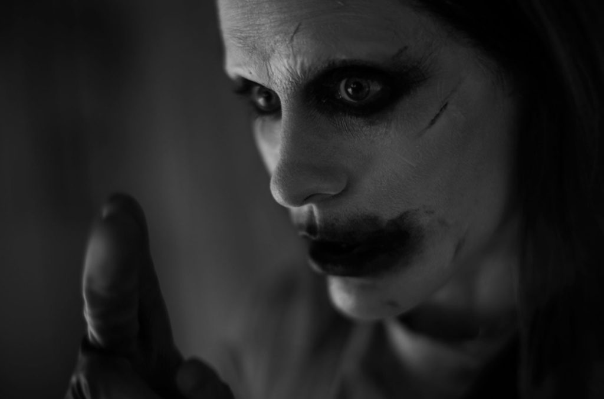
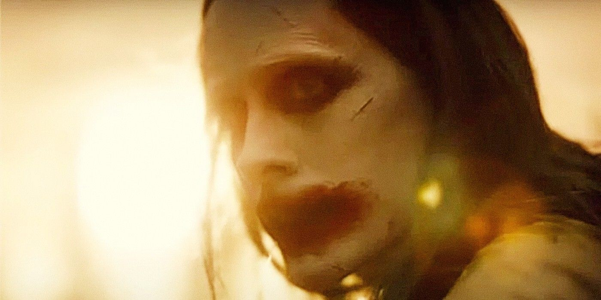

ภาพใหม่ Joker สุดหลอน Jared Leto ขอกลับมาลบคำสบประมาทใน Justice League Znyder’s Cut

ใกล้วันสตรีมทาง HBO Max (บ้านเราดูได้ทาง HBO Go) 19 มีนาคมเข้ามาทุกที สำหรับหนัง Justice League ฉบับตัดต่อใหม่จากวิสัยทัศน์ดั้งเดิมของผู้กำกับ Zack Snyder ซึ่งจะเป็นหนังเต็มเรื่องความยาว 4 ชั่วโมง และช่วงนี้หนังก็ได้โหมประชาสัมพันธ์ทั้งคลิปและภาพออกมามากมายเพื่อให้สมกับที่แฟน ๆ รอคอยมายาวนานและช่วยผลักดันให้โลกได้ชมฉบับนี้ ล่าสุดหนังก็ปล่อยภาพชวนหลอนของ Joker ในจักรวาล DCEU ออกมา ซึ่งทั้งหลอนและน่ากลัวกว่าที่เห็นใน Suicide Squad (2016) มาก
สุดท้าย Leto ประกาศว่าจะไม่กลับมารับบทนี้ใน DCEU อีก (และตอนนั้น Leto ก็เอาเรื่องกับตัวแทนเอเจนซีที่เขาจ้างมาดูแลอย่างหนักหน่วง ที่ปล่อยให้ Warner เดินแผนนี้ได้ตั้งนาน โดยที่เขาไม่รู้) ท้ายที่สุด Harley Quinn จึงแยกทางเดินมาเป็นหนัง Birds of Prey (2020) และหนังคู่รักดาวร้ายก็ไม่เกิดขึ้นต่อมาเมื่อ Zack Snyder ได้กลับมาทำ Justice League หนึ่งในกระแสที่เรียกเสียงฮือฮาได้ทันที ก็คือการที่ Leto จะกลับมาถ่ายเพิ่มในบท Joker ซึ่งเป็นตัวละครไม่กี่ตัวที่จะถ่ายใหม่ (อีกคนคือ Joe Manganiello ในบท Deathstroke) ส่วนตัวละครฮีโร่หลัก ๆ Snyder จะใช้ฟุตเทจเดิมทั้งหมด
